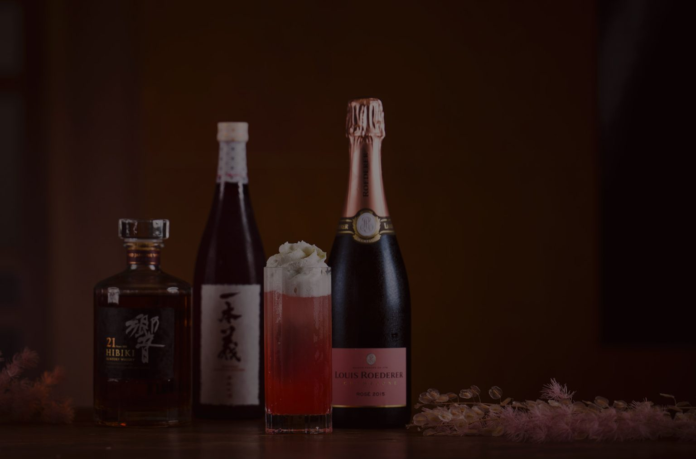
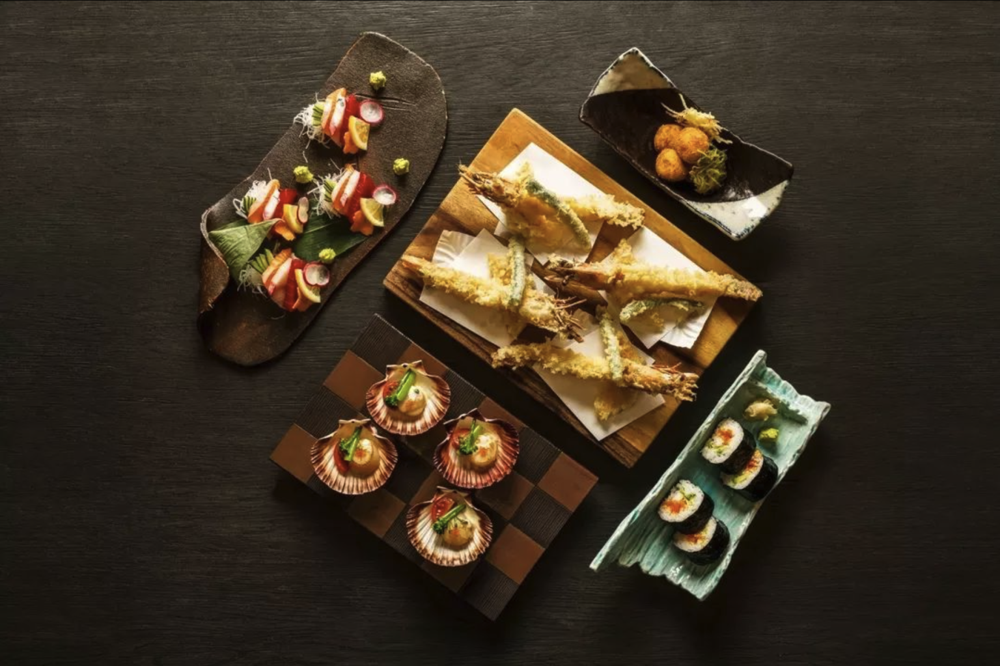
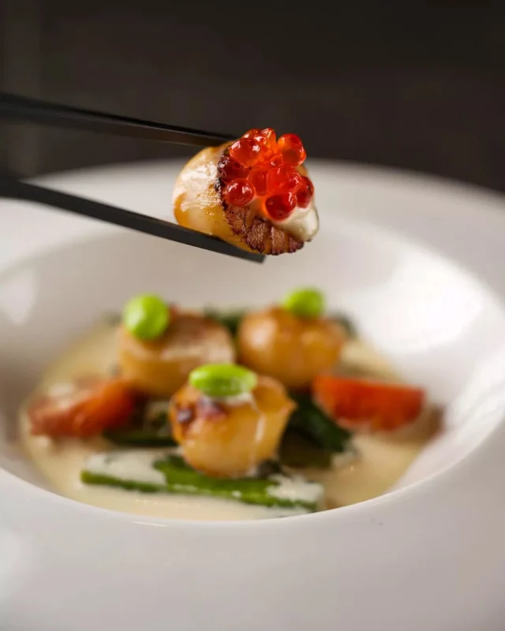
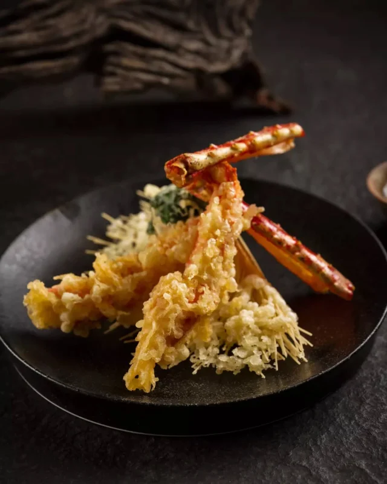
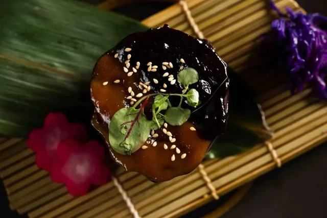
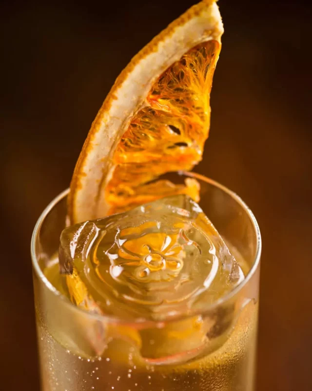
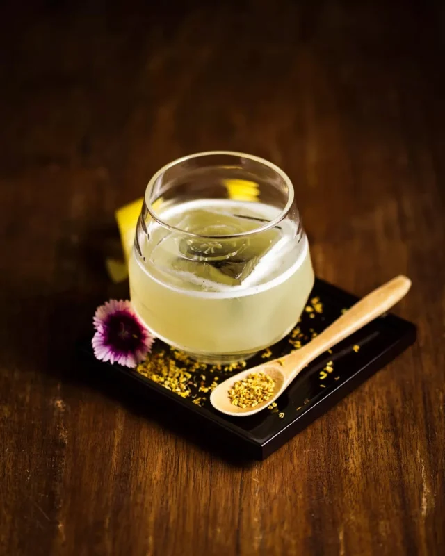
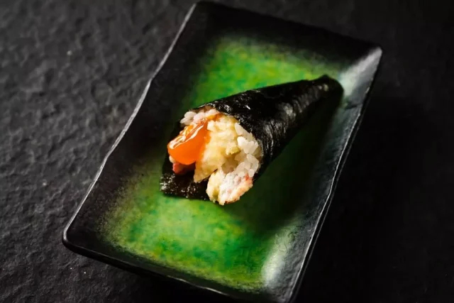
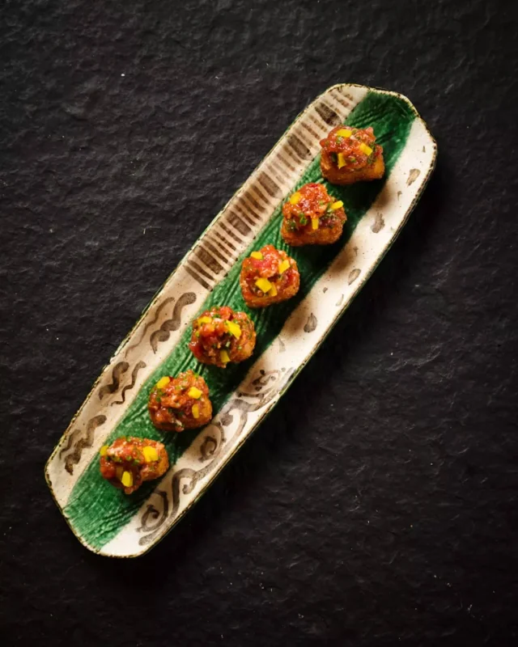
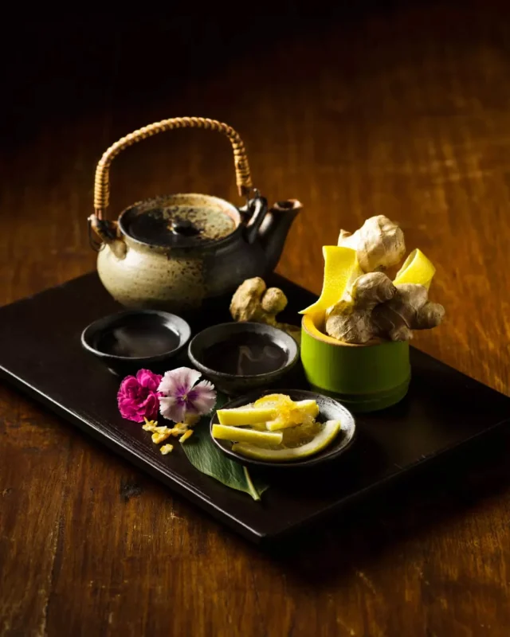

At Sono, we pride ourselves on offering a truly authentic Japanese dining experience. Our delicious menu showcases the finest traditional Japanese cuisine, crafted with culinary prowess and care from locally-sourced seasonal produce as well as fresh premium imported Japanese meats and seafood. We encapsulate and infuse the essence of Japan throughout everything we do. This ensures that we not only serve the most authentic Japanese food Brisbane has to offer, but that everyone who dines with us leaves with a memorable experience.
Brisbane’s most awarded Authentic Japanese Restaurant

At Sono, we believe that a true Japanese dining experience is complemented by an exquisite selection of beverages. Our curated sake list features a variety of premium options, ranging from crisp and refreshing to rich and complex, ensuring that there is a perfect pairing for every dish. In addition to sake, we offer a diverse range of Japanese beer, spirits and liqueurs as well as vibrant cocktails and a fine selection of wines – all carefully selected to enhance your meal.
For an unparalleled Japanese dining experience in Brisbane, Sono offers an exceptional setting that blends traditional charm with modern comfort. Our tatami private dining rooms provide an authentic and intimate atmosphere, perfect for a romantic date night or special event. Whether you’re seeking a relaxed atmosphere or the vibrant energy of our teppanyaki bar, Sono Japanese Brisbane Portside delivers an ambiance that caters to every occasion.









Be the first to know about Sono’s special events and news.